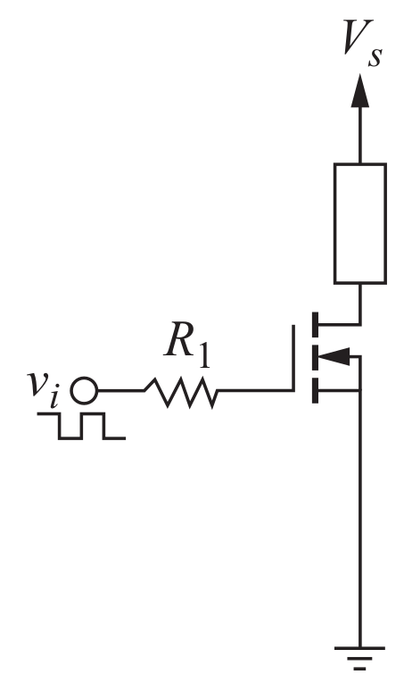
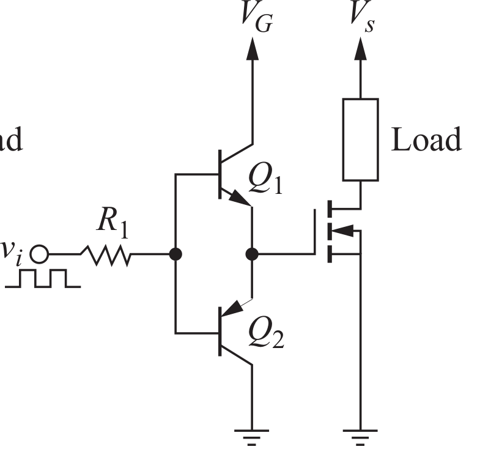
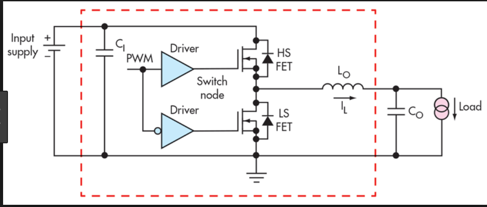
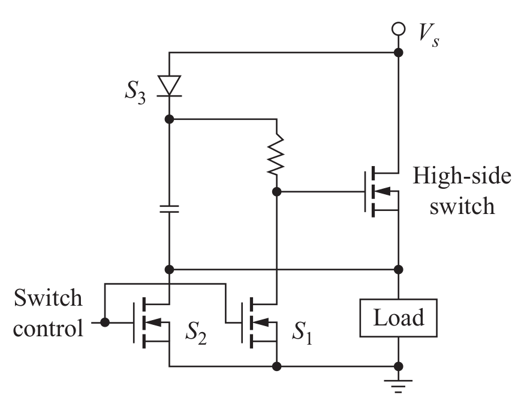
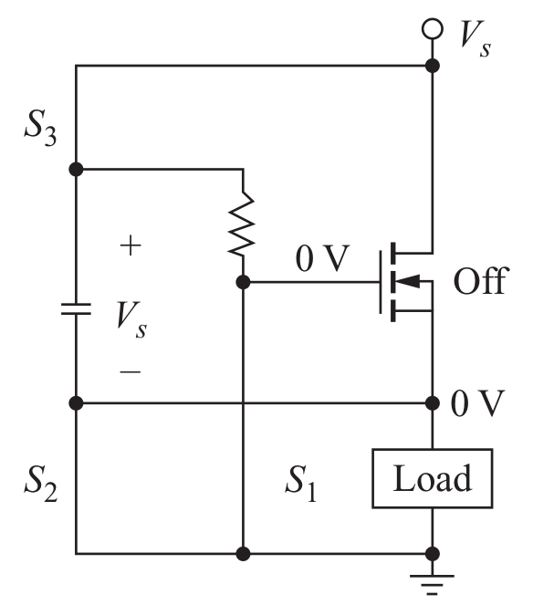
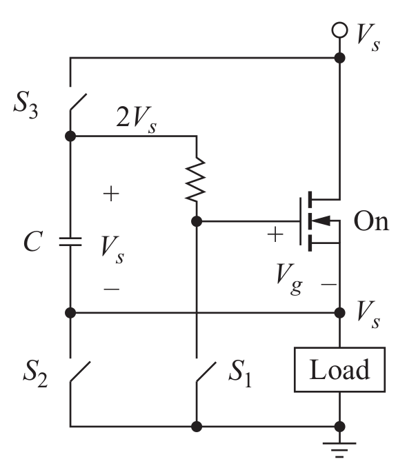
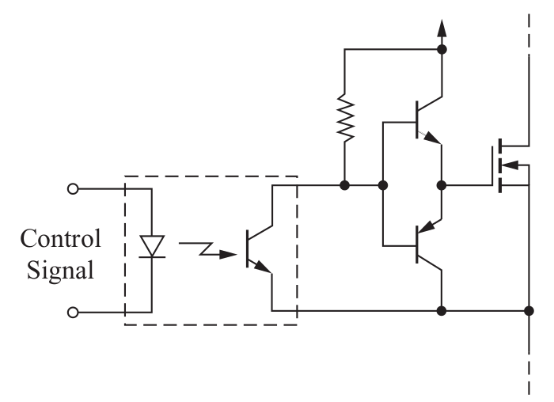
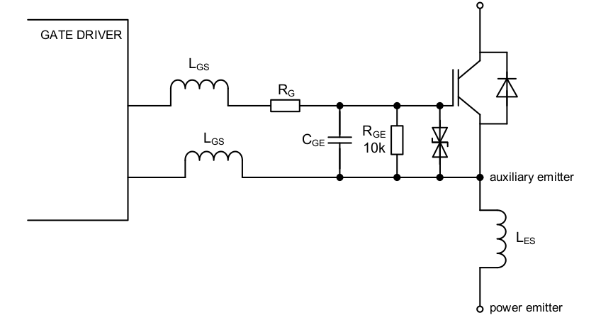
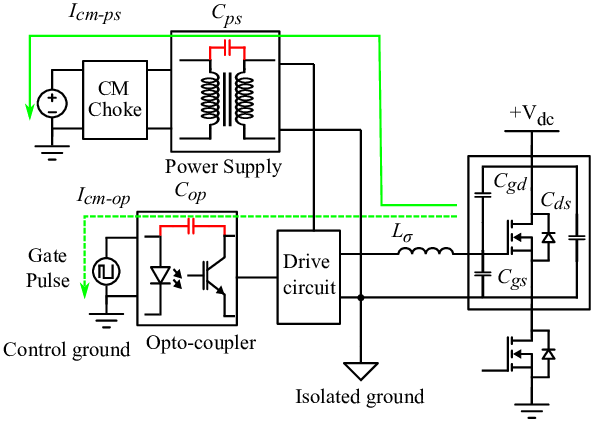

class: center, middle # EE-463 STATIC POWER CONVERSION-I # Gate Drivers and Isolation ## Ozan Keysan ## [keysan.me](http://keysan.me) ### Office: C-113 <span class="meta">•</span> Tel: 210 7586 --- # Drive Circuits -- ### Interface betweeen control and power circuits -- <img src="http://www.teldevice.co.jp/eng/img/news_release/igbt_block_en.jpg" alt="Drawing" style="width: 750px;"/> --- # Requirements -- - ## Supply enough current/voltage for switching (device specific, can be unipolar or bipolar) -- - ## Minimize turn-on, turn-off times -- - ## Isolate the low voltage logic from high voltage side -- - ## In some cases protection is embedded (dead-time, over-current, over-temp etc) --- # Basic Drive Circuits -- ### Simple MOSFET Drive Circuit  --- # Basic Drive Circuits ### Double emitter-follower drive circuit  --- # Basic Drive Circuits ### IC drive with double emitter-follower buffer <img src="./images/ee463/drive3.png" alt="Drawing" style="width: 550px;"/> --- # Low Side vs. High Side Switches  ### Buck converter: high-side switch, boost converter: low-side switch --- # High Side Switch ## How can you generate a gate voltage higher than Vs? -- - ## Bootstrap Circuits - ## Galvanic Isolation (Pulse transformers) - ## Optocoupler and Floating Power Supply --- # Bootstrap Circuits (Charge Pumps) --  ### S1 and S2 are used for driving the main switch --- # Bootstrap Circuits (Charge Pumps) -- ### S1, S2 and S3 are used for driving the main switch --- ## S1, S2, S3 are ON, Main Switch OFF  --- ## S1, S2, S3 are OFF, Main Switch ON  --- # A Few Commercial Products: ### [IR2117](https://www.infineon.com/dgdl/Infineon-ir2117-DS-v01_00-EN.pdf?fileId=5546d462533600a4015355c84331168d) ### [MIC5018](http://ww1.microchip.com/downloads/en/DeviceDoc/mic5018.pdf) ### [Infineon Drivers](https://www.infineon.com/cms/en/product/power/gate-driver-ics/high-and-low-side-drivers/#!overview) ### [Analog Devices, MOSFET Drives](https://www.analog.com/en/parametricsearch/11395) ### [Texas Instruments, Half Bridge Drivers](http://www.ti.com/power-management/gate-drivers/half-bridge-drivers/products.html) --- # Useful Readings ### [High Side Low Side Switches](https://engineering.purdue.edu/Courses/ECE433/exp5_5th~6thweek_.pdf) ### [TI Training Videos](https://training.ti.com/gate-driver-training-series-low-side-and-h-bridge-gate-driver-fundamentals) ### [Infineon Gate Driver ICs](https://www.infineon.com/dgdl/Infineon-Selection_Guide_Gate_Driver_ICs-SG-v01_00-EN.pdf?fileId=5546d46250cc1fdf015110069cb90f49 ) ### [MOSFET Gate Drive Circuit](https://toshiba.semicon-storage.com/info/docget.jsp?did=59460) ### [Firat Deveci, Gate Drivers](http://www.firatdeveci.com/dikkat-high-side-gate-driver/) --- # Isolation -- ## Electric Isolation between HV and LV sider is usually required for proper operation and electric safety. --- ## (Galvanic) Isolation: -- No direct electric contact between two sides - ## Transformers -- <img src="https://www.allaboutcircuits.com/uploads/articles/TransformerSMDVariety.jpg" alt="Drawing" style="width: 450px;"/> ### Isolation Transformers --- ## (Galvanic) Isolation: - ## Pulse Transformer Gate Driver -- <img src="http://www.analog.com/-/media/images/analog-dialogue/en/volume-46/number-4/articles/implementing-an-isolated-half-bridge-gate-driver/gate_driver-fig-03.jpg" alt="Drawing" style="width: 550px;"/> --- ## (Galvanic) Isolation: - ## Embedded Isolation in Chip -- <img src="http://www.analog.com/-/media/images/analog-dialogue/en/volume-46/number-4/articles/implementing-an-isolated-half-bridge-gate-driver/gate_driver-fig-04.jpg" alt="Drawing" style="width: 550px;"/> --- ## (Galvanic) Isolation: - ## Embedded Isolation in Chip <img src="http://www.analog.com/-/media/images/analog-dialogue/en/volume-46/number-4/articles/implementing-an-isolated-half-bridge-gate-driver/gate_driver-fig-05.jpg" alt="Drawing" style="width: 550px;"/> #### [More Info](http://www.analog.com/en/analog-dialogue/articles/implementing-an-isolated-half-bridge-gate-driver.html) --- # (Galvanic) Isolation - ## Isolation with Capacitor (Less Common) <img src="https://www.allaboutcircuits.com/uploads/articles/CapacitorIsolatedSchMax256.gif" alt="Drawing" style="width: 550px;"/> --- ## Optic Isolation -- ## Signal is transmitted by light  --- ## Optic Isolation <img src="http://www.analog.com/-/media/images/analog-dialogue/en/volume-46/number-4/articles/implementing-an-isolated-half-bridge-gate-driver/gate_driver-fig-01.jpg" alt="Drawing" style="width: 550px;"/> --- # Isolated Driver Examples ## [IGBT Gate Driver](https://pdf.direnc.net/upload/vla542-01r-datasheet.pdf) ## [IGBT Gate Driver + DC/DC Converter](https://pdf.direnc.net/upload/vla500k-01r-datasheet.pdf) ## [Infineon 2EDF7175F](https://www.infineon.com/cms/en/product/power/gate-driver-ics/2edf7175f/#!overview) ## [Infineon EiceDrivers](https://www.infineon.com/dgdl/Infineon-2EDF7175F-DS-v02_04-EN.pdf?fileId=5546d462636cc8fb0163b09026be3060) --- # Comparison of Isolation Types <img src="https://cdn.eeweb.com/articles/articles/Screen-Shot-2014-04-03-at-3.36.32-PM-1396561219.png#asset:11833" alt="Drawing" style="width: 800px;"/> --- # Application Notes - ### [Semikron, IGBT Driver Calculation](https://www.semikron.com/dl/service-support/downloads/download/semikron-application-note-igbt-driver-calculation-en-2007-10-31-rev-00/) - ### [Gate Drive Optocouplers](https://www.vishay.com/docs/81227/81227.pdf) - ### [Fundamentals of MOSFET and IGBT Gate Driver Circuits](http://www.ti.com/lit/ml/slua618a/slua618a.pdf) - ### [IGBT and MOSFET Drivers Correctly Calculated](https://gate-driver.power.com/sites/default/files/product_document/application_note/AN-1001_IGBT_and_MOSFET_Drivers_Correctly_Calculated.pdf) - ### [MOSFET/IGBT Drivers Theory and Applications](http://www.ixysic.com/home/pdfs.nsf/www/AN-401.pdf/$file/AN-401.pdf) - ### [Noise Reduction and Isolation](https://www.mccdaq.com/PDFs/specs/Noise-Reduction.pdf) - ### [How to Select Right Galvanic Isolation](https://www.digikey.com/en/articles/techzone/2017/dec/how-select-galvanic-isolation-technology-for-iot-sensors) --- ## Considerations/Problems -- - ### Minimize Stray Inductance  ### [Connection of Gate Drivers to IGBT and Controller](https://www.semikron.com/dl/service-support/downloads/download/semikron-application-note-connection-of-gate-drivers-to-igbt-and-controller-en-2006-09-05-rev-00.pdf) --- ## Considerations/Problems - ### Minimize Cable Inductance/Coupling <img src="https://www.agkablosu.com/image/catalog/agkablosu_com/BLOG/UTP-STP.jpg" alt="Drawing" style="width: 800px;"/> #### UTP: Unshielded twisted pair #### STP: Shielded twisted pair #### FTP: Foiled twisted pair --- ## Considerations/Problems -- - ### Shielding and Minimize Stray Inductance  --- ## Considerations/Problems - ### Shielding and Minimize Stray Inductance - ### [PCB Layout for EMC](https://www.powerelectronicsnews.com/problems-solutions/pcb-layout-for-emc-power-supply-design-tutorial-section-3-1) - ### [High Speed PCB Layout Techniques](http://www.ti.com/lit/ml/slyp173/slyp173.pdf) - ### [PCB Design Issues](https://www.analog.com/media/en/training-seminars/design-handbooks/Basic-Linear-Design/Chapter12.pdf) --- ## Considerations/Problems -- - ### Reduction of Stray Inductance in Bus Bars <img src="https://www.mersen.com/sites/default/files/publications-media/2017-06-spm-power-electronics-assembly-matrix-converter-mersen.png" alt="Drawing" style="width: 800px;"/> --- ## You can download this presentation from: [keysan.me/ee463](http://keysan.me/ee463)